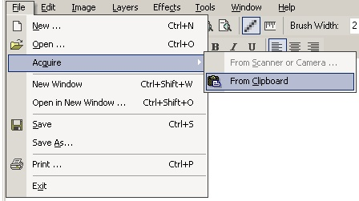
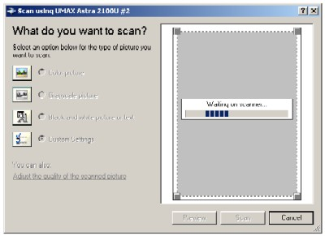

Acquire Operation
|
 There are many ways you can Acquire an image (File-->Acquire). For instance, if you have a scanner or camera connected to the computer, images are easily begotten. Also, if there is an image on the clipboard, you can quickly acquire that as well. Note: Once you Acquire an image, you will be prompted if you want to save the current image. This is necessary because the Acquire Operation resets the entire image, and all previous work is lost. There is no way to Acquire an image to an individual layer and so forth. |
|
 This is an example of using a scanner to Acquire an image. The interface is simple. The basic operation is to select the type of scan you would like to take. You may also preview the object on the scanner as well as changing a few default settings. The small gray boxes on the four corners of the scan window can be moved to better focus in on what you would like to scan. |